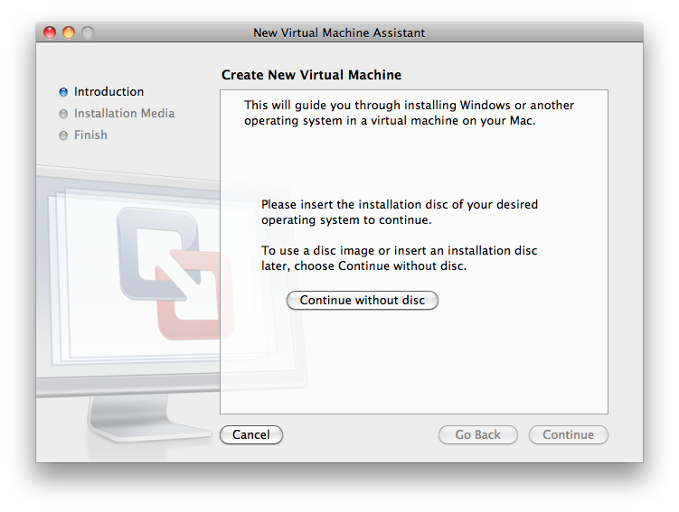
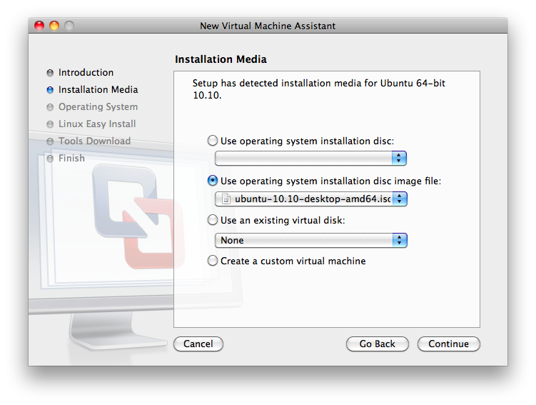
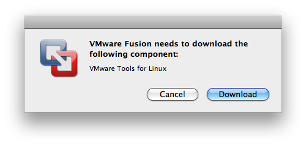
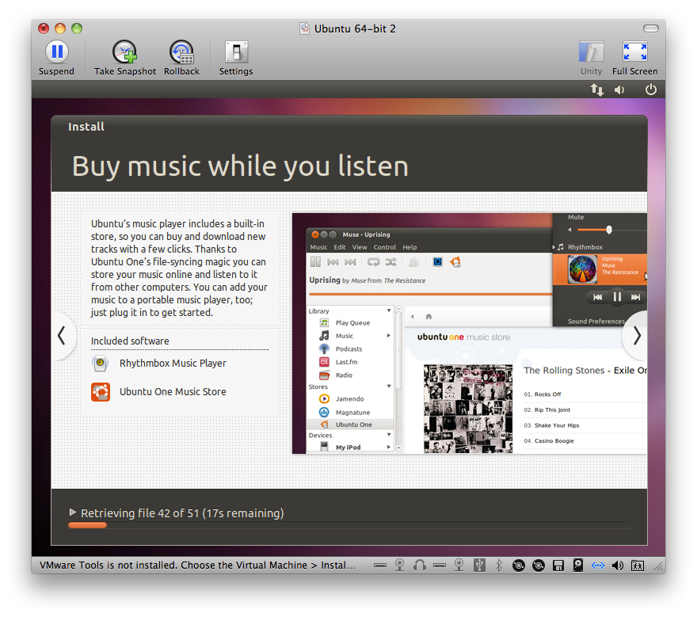

Figure 1: Choose Install Windows or another operating system in a new virtual machine.

Buy VMWare Fusion, download, and install (write the serial number during installation). To get quickly started, you download a trial version for free and later buy it and register the serial number (easy).
Go to http://www.ubuntu.com/desktop/get-ubuntu/download and choose the latest 64-bit Desktop version of Ubuntu. Save the downloaded Ubuntu file at some place you can recognize later.
Among the Debian-based distributions, we recommend Ubuntu, simply because switching keyboard layouts is more reliable or easier in Ubuntu than in, e.g., Lubuntu, Xubuntu, and Linux Mint (a configured layout might be gone after a reboot). Switching keyboard layouts are particularly convenient when doing programming with an English/American keyboard, with braces and brackets in natural places, and then writing emails using a native keyboard with special characters.
Ctrl+space to switch between the keyboards in different languages.You now have a full Ubuntu machine, but there is not much software on a it. Installation is performed through the Ubuntu Software Center (a graphical application) or through Unix commands, typically
Terminal> sudo apt-get install packagename
To look up the right package name, run apt-cache search followed by
typical words of that package. The strength of the apt-get way
of installing software is that the package and all packages it depends on
are automatically installed through the apt-get install command.
This is in a nutshell why Ubuntu (or Debian-based Linux systems)
are so user-friendly for installing sophisticated mathematical software.
To install a lot of useful packages for scientific work, go to
http://goo.gl/RVHixr and click on one of the following
files, which will install a collection of software for scientific work
using apt-get:
install_minimal.sh: install a minimal collection (recommended)install_rich.sh: install a rich collection (takes time to run)
Terminal> cd ~/Downloads
Terminal> bash install_minimal.sh
The program will run for quite some time, hopefully without problems.
If it stops, set a comment sign # in front of the line where it stopped
and rerun.
The Ubuntu machine can see the files on your host system if you
download VMWare Tools. Go to the Virtual Machine pull-down menu in
VMWare Fusion and choose Install VMWare Tools. A tarfile is
downloaded. Click on it and it will open a folder vmware-tools-distrib,
normally in your home folder. Move to the new folder and
run sudo perl vmware-install.pl.
You can go with the default answers to all the questions.
On a Mac, you must open Virtual Machine - Settings... and choose
Sharing to bring up a dialog where you can add the folders you want
to be visible in Ubuntu. Just choose your home folder. Then turn on
the file sharing button (or turn off and on again). Go to Ubuntu and
check if you can see all your host system's files in /mnt/hgfs/.
If you later detect that /mnt/hgfs/ folder has become empty,
VMWare Tools must be reinstalled by running
sudo perl vmware-install.pl as above or
Terminal> sudo /usr/bin/vmware-config-tools.pl
Documents/Virtual Machines/Ubuntu 64-bit.
Backing up the Ubuntu machine means backing up this folder.
However, if you use tools like Time Machine and work in Ubuntu during
backup, the copy of the state of the Ubuntu machine is likely to
be corrupt. You are therefore strongly recommended to shut down the
virtual machine prior to running Time Machine or simply copying the
folder with the virtual machine to some backup disk.
If something happens to your virtual machine, it is usually a straightforward task to make a new machine and import data and software automatically from the previous machine.
Launch VMWare Fusion. You may get a window like this:
Figure 1: Choose Install Windows or another operating system in a new virtual machine.
If you do not see this window, choose File - New.
Figure 2: Choose Continue without disc.

Figure 3: Choose Use operating system installation disc image file and find the file you downloaded from the Ubuntu web page.

On newer versions of VMWare Fusion you must double click on Use operating system installation disc or image.
Figure 4: Choose Linux and Ubuntu 64-bit if Ubuntu. In case your Linux distributions is not in the drop-down list, choose Other Linux 2.6.x kernel 64-bit.

In the next step, choose Customize Settings and make the following settings:
Figure 5: Press Download (make sure you are connected to the Internet). This question is asked only the first time you install a Linux VMWare virtual machine.


Now the default configuration of Ubuntu is shown, with 20 Gb disk space. The settings can be changed by clicking on Customize Settings, now or later. For example, the amount of memory for Ubuntu can be set (choose 2 Gb or more), as well as the number of processors, and the amount of disk space.

Figure 6: Choose where you want to store the Ubuntu iso file on the Mac hard disk, and click Save. The Ubuntu iso file is a single file containing all of Ubuntu. In the example configuration above, this file is 20 Gb. Backing up this file with, e.g., Time Machine backs up your whole Ubuntu installation, i.e.,all of Ubuntu and all of your files on Ubuntu.

Figure 7: Start the new Ubuntu in VMWare Fusion. Just let it work.

When this start-up of Ubuntu is finished, click on the Ubuntu window
to launch the Install application. Click Install. On the next
page, fill in Download updates while installing and Install third-party
software. Then click Continue.
On the next page, choose Erase disk and install Ubuntu, then provide
your location, choose a keyboard layout (English is recommended for
programmers, but you can easily set up Ubuntu to switch between different
keyboards by means of a short-key). Fill in name and other stuff.
Ubuntu will then eventually install the operating system.
Figure 8: You can have the Ubuntu window filling the whole screen (full screen view), or you can have it as a standard window side by side with the other windows in Mac OS X.

The next step is probably to remove some of the unwanted icons on the left to make space for more applications of your choice. More important: you will most likely need to define a higher resolution of the display. Find the System settings icon on the left, go to Display, choose some display (you can try several, click Keep this configuration when you are satisfied).
The next step is to define a Norwegian keyboard that can live side
by side with an English one. Launch System settings, go to
Keyboard, click Layout Settings, choose additional keyboard(s),
and define some shortcut keys, say Ctrl-space to switch between
the English and Norwegian keyboards.
You may control other keyboard shortcuts too, e.g., the one used to
jump efficiently between applications:
Find System settings in the array of icons on the left,
go to Keyboard,
click Shortcuts, then Navigation, click Switch applications
and type the desired keyboard shurtcut, e.g., alt-tab.
There is not much software on a plain Ubuntu system. To install useful software for scientific work, go to http://goo.gl/RVHixr and click on one of the following files, which will install a collection of software for scientific work:
install_minimal.sh (Bash program): install a minimal collection (recommended)install_minimal.py (Python version)install_rich.sh (Bash program): install a rich collection (takes time to run)install_rich.py (Python version)
Terminal> cd ~/Downloads
Terminal> bash install_minimal.sh
If you prefer to run the Python version, the last line is replaced by
python install_minimal.py.
The program will run for quite some time, hopefully without problems.
If it stops, set a comment sign # in front of the line where it stopped
and rerun.
Internet Does not Work in Ubuntu. Invoke the VMWare Fusion menu Virtual Machine - Settings - Network and test Share the Mac's network connection versus Connect directly to the physical network (Bridged).